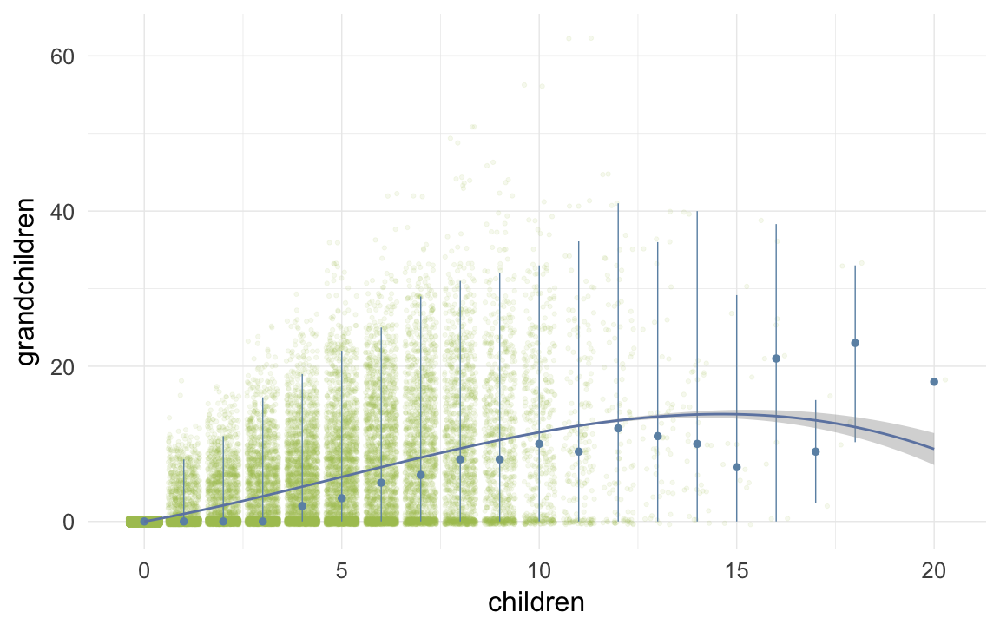
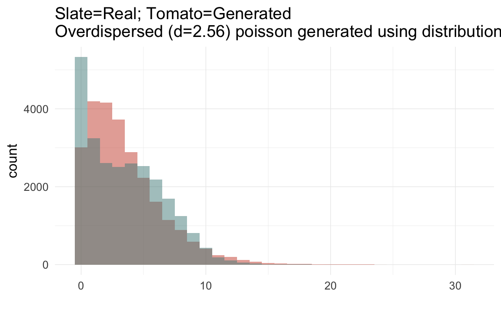
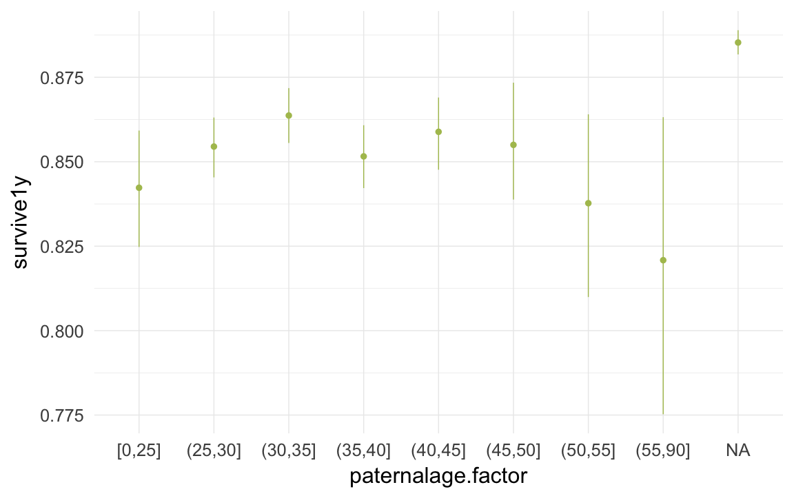
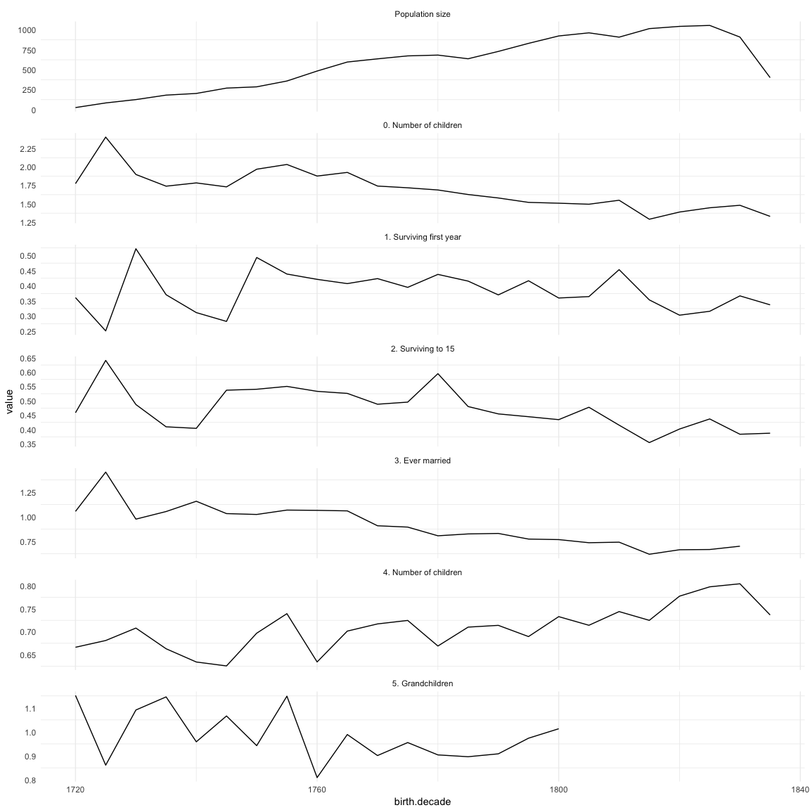

Loading details
source("0__helpers.R")
opts_chunk$set(render = pander_handler, tidy=FALSE, autodep=TRUE, dev='png', fig.width=12, fig.height=7.5, cache = FALSE, warning = FALSE, message = FALSE)
load("krmh.rdata")
desc_theme = theme_minimal(base_size = 24)
update_geom_defaults("bar", list(fill = "#6c92b2", alpha = 1/2))
krmh = data.table(krmh)
krmh.1 = data.table(krmh.1)
demo_trends = aggDemoTrends(krmh)
mymin = theme_minimal() +theme(panel.grid.major.y =element_blank(),panel.grid.major.x = element_line(colour="#eeeeee"))
krmh[, paternalage := 10 * paternalage]; krmh.1[, paternalage := 10 * paternalage]
krmh[, maternalage := 10 * maternalage]; krmh.1[, maternalage := 10 * maternalage]
krmh[, age := 10 * age]; krmh.1[, age := 10 * age]
krmh[, age_at_1st_child := 10 * age_at_1st_child]; krmh.1[, age_at_1st_child := 10 * age_at_1st_child]
krmh[, age_at_last_child := 10 * age_at_last_child]; krmh.1[, age_at_last_child := 10 * age_at_last_child]
krmh[, byear := year(bdate)]; krmh.1[, byear := year(bdate)]
krmh[, byear.Father := year(bdate.Father)];krmh.1[, byear.Father := year(bdate.Father)]
Missingness patterns
The first table shows the number of missings per variable, the second table, using the indexes from the first, shows missings in which variables tend to occur together. Most variables of interest in this study are derived from these dates and so these patterns can show many cases did not have the data to calculate e.g. paternal loss (those lacking either the father’s death date, the anchor’s birth date or both).
pander_escape(missingness_patterns(krmh[, list(
bdate, ddate, bdate.Father, ddate.Father, bdate.Mother, ddate.Mother
)]))
## index col missings
## 1 ddate 52229
## 2 ddate.Mother 32025
## 3 ddate.Father 31617
## 4 bdate.Father 28192
## 5 bdate.Mother 27849
## 6 bdate 5790
| 1__________ |
19733 |
ddate |
| ___________ |
12819 |
_ |
| 1_2_3_4_5__ |
8735 |
|
| 1_2_3______ |
5237 |
|
| __2_3_4_5__ |
2732 |
|
| 1_____4_5__ |
2350 |
|
| 1_2________ |
2335 |
|
| 1___3______ |
2087 |
|
| __2_3______ |
2060 |
|
| __2_3_4_5_6 |
2013 |
|
| 1_2_3_4_5_6 |
1549 |
|
| 1_____4____ |
1526 |
|
| __2________ |
1394 |
ddate.Mother |
| ____3______ |
1310 |
ddate.Father |
| 1_______5__ |
1292 |
|
| 1_2___4_5__ |
1211 |
|
| 1___3_4____ |
1134 |
|
| 1_2_____5__ |
1079 |
|
| ______4_5__ |
1070 |
|
| 1___3_4_5__ |
1008 |
|
| ________5__ |
864 |
bdate.Mother |
| ______4____ |
817 |
bdate.Father |
| 1_2_3___5__ |
797 |
|
| 1_2_3_4____ |
757 |
|
| ____3_4____ |
580 |
|
| __2_____5__ |
452 |
|
| __2___4_5__ |
372 |
|
| ______4_5_6 |
358 |
|
| ____3_4_5__ |
327 |
|
| __2_3_4____ |
277 |
|
| 1_____4_5_6 |
274 |
|
| __2_3___5__ |
254 |
|
| 1_2___4_5_6 |
222 |
|
| __________6 |
158 |
bdate |
| 1___3_4_5_6 |
156 |
|
| ____3_4_5_6 |
154 |
|
| 1_________6 |
148 |
|
| 1___3___5__ |
145 |
|
| 1_2___4____ |
139 |
|
| __2___4_5_6 |
118 |
|
| ______4___6 |
96 |
|
| ________5_6 |
83 |
|
| ____3___5__ |
63 |
|
| __2___4____ |
62 |
|
| 1_2_____5_6 |
54 |
|
| 1___3_4___6 |
53 |
|
| 1_______5_6 |
53 |
|
| 1_____4___6 |
35 |
|
| __2_____5_6 |
35 |
|
| 1_2_3_____6 |
34 |
|
| ____3_4___6 |
33 |
|
| 1___3_____6 |
31 |
|
| ____3_____6 |
19 |
|
| __2_______6 |
18 |
|
| 1_2_______6 |
17 |
|
| 1_2_3_4___6 |
16 |
|
| __2_3_____6 |
16 |
|
| 1_2_3___5_6 |
14 |
|
| __2_3_4___6 |
11 |
|
| __2_3___5_6 |
8 |
|
| 1___3___5_6 |
5 |
|
| __2___4___6 |
4 |
|
| 1_2___4___6 |
3 |
|
| ____3___5_6 |
2 |
|
Reproductive timing
ggplot(data = demo_trends[Year > 1680 & Year< 1900,]) +
geom_line(aes(x= Year, y = first, linetype = "first", colour = Parent), size = 1) +
geom_line(aes(x = Year, y = all, linetype = "all", colour = Parent), size = 1) +
geom_line(aes(x= Year, y = last, linetype = "last", colour = Parent),size = 1) +
scale_colour_manual(values = c(Father = "#6c92b2", Mother = "#aec05d")) +
scale_linetype_manual("Birth", breaks = c("last", "all","first"), values = c( "solid","dashed", "dotted")) +
scale_y_continuous("Parental age at birth") +
geom_text(aes(x = Year, y = all + 0.5,
label = ifelse(Year %% 15 == 0, round(all), NA))) +
facet_wrap(~ Parent) +
desc_theme + theme(legend.position = c(1,1),
legend.justification = c(1,1),
legend.box = "horizontal",
panel.margin = unit(2, "lines"))
Correlations between variables
round(cor(krmh[, list(
paternalage, maternalage, birthorder, nr.siblings, children, grandchildren, byear, byear.Father, age_at_1st_child, age_at_last_child
)], use = "pairwise.complete.obs"),2)
| paternalage |
1 |
0.63 |
0.56 |
0.14 |
-0.04 |
-0.02 |
0.05 |
-0.12 |
0.04 |
0 |
| maternalage |
0.63 |
1 |
0.64 |
0.1 |
-0.04 |
-0.03 |
0.11 |
0 |
0.03 |
0 |
| birthorder |
0.56 |
0.64 |
1 |
0.67 |
-0.03 |
-0.02 |
0.1 |
-0.04 |
0.02 |
0.02 |
| nr.siblings |
0.14 |
0.1 |
0.67 |
1 |
0.01 |
0 |
0.04 |
-0.07 |
0.02 |
0.05 |
| children |
-0.04 |
-0.04 |
-0.03 |
0.01 |
1 |
0.64 |
-0.09 |
-0.15 |
-0.25 |
0.64 |
| grandchildren |
-0.02 |
-0.03 |
-0.02 |
0 |
0.64 |
1 |
-0.14 |
-0.21 |
-0.14 |
0.32 |
| byear |
0.05 |
0.11 |
0.1 |
0.04 |
-0.09 |
-0.14 |
1 |
0.99 |
-0.04 |
-0.19 |
| byear.Father |
-0.12 |
0 |
-0.04 |
-0.07 |
-0.15 |
-0.21 |
0.99 |
1 |
-0.08 |
-0.21 |
| age_at_1st_child |
0.04 |
0.03 |
0.02 |
0.02 |
-0.25 |
-0.14 |
-0.04 |
-0.08 |
1 |
0.44 |
| age_at_last_child |
0 |
0 |
0.02 |
0.05 |
0.64 |
0.32 |
-0.19 |
-0.21 |
0.44 |
1 |
ggplot(data=krmh, aes(x = byear, y = paternalage)) +
geom_linerange(stat = "summary", fun.data = "median_hilow", colour = "#aec05d") +
geom_pointrange(stat = "summary", fun.data = "mean_cl_boot", colour = "#6c92b2") +
desc_theme
ggplot(data=krmh, aes(x = byear, y = age_at_1st_child)) +
geom_linerange(stat = "summary", fun.data = "median_hilow", colour = "#aec05d") +
geom_pointrange(stat = "summary", fun.data = "mean_cl_boot", colour = "#6c92b2") +
desc_theme
ggplot(data=krmh, aes(x = byear, y = age_at_last_child)) +
geom_linerange(stat = "summary", fun.data = "median_hilow", colour = "#aec05d") +
geom_pointrange(stat = "summary", fun.data = "mean_cl_boot", colour = "#6c92b2") +
desc_theme
ggplot(data=krmh, aes(x = byear, y = children)) +
geom_linerange(stat = "summary", fun.data = "median_hilow", colour = "#aec05d", na.rm=T) +
geom_pointrange(stat = "summary", fun.data = "mean_cl_boot", colour = "#6c92b2") +
desc_theme

ggplot(data=krmh, aes(x = byear, y = survive1y)) +
geom_pointrange(stat = "summary", fun.data = "mean_cl_boot", colour = "#aec05d") +
desc_theme

ggplot(data=krmh, aes(x = byear, y = surviveR)) +
geom_pointrange(stat = "summary", fun.data = "mean_cl_boot", colour = "#aec05d") +
desc_theme

ggplot(data=krmh, aes(x = children, y = grandchildren)) +
geom_jitter(colour = "#aec05d", alpha = I(0.1)) +
geom_pointrange(stat = "summary", fun.data = "median_hilow", colour = "#6c92b2") +
geom_smooth(method = "glm", formula = y ~ poly(x,3), colour = "#6e85b0") +
desc_theme

ggplot(data=krmh, aes(x = children, y = children.surviving5y)) +
geom_jitter(colour = "#aec05d", alpha = I(0.1)) +
geom_pointrange(stat = "summary", fun.data = "median_hilow", colour = "#6c92b2") +
geom_smooth(method = "glm", formula = y ~ poly(x,3), colour = "#6e85b0") +
desc_theme

ggplot(data=krmh, aes(x = round(age), y = children)) +
geom_jitter(colour = "#aec05d", alpha = I(0.1)) +
geom_pointrange(stat = "summary", fun.data = "mean_cl_boot", colour = "#6c92b2") +
geom_smooth(colour = "#6e85b0") +
xlab("Age") +
ylab("Number of children") +
desc_theme
ggplot(data=krmh[children>0,], aes(x = round(age), y = children)) +
geom_jitter(colour = "#aec05d", alpha = I(0.1)) +
geom_pointrange(stat = "summary", fun.data = "mean_cl_boot", colour = "#6c92b2") +
geom_smooth(colour = "#6e85b0") +
xlab("Age") +
ylab("Number of children") +
desc_theme

plot_zero_infl(krmh[ spouses > 0, ]$children)

ggplot(data=krmh, aes(x = paternalage.factor, y = survive1y)) +
geom_pointrange(stat = "summary", fun.data = "mean_cl_boot", colour = "#aec05d") +
desc_theme

ggplot(data=krmh[spouses > 0, ], aes(x = paternalage.factor, y = children)) +
geom_pointrange(stat = "summary", fun.data = "mean_cl_boot", colour = "#aec05d") +
desc_theme
Opportunities for selection
krmh.1$birth.decade = round(krmh.1$byear/5)*5
episodes = krmh.1 %>%
filter(!is.na(male) | !is.na(survive1y) | !is.na(ever_married)) %>%
group_by(birth.decade) %>%
summarise(
"Population size" = as.numeric(length(idIndividu)),
"0. Number of children" = ifelse(between(birth.decade, 1655,1840), cva(children), NA_real_ ),
"1. Surviving first year" = ifelse(between(birth.decade, 1655, 1870),cva_bin(survive1y), NA_real_ ),
"2. Surviving to 15" = ifelse(between(birth.decade, 1655,1840), cva_bin(surviveR[survive1y==T]), NA_real_ ),
"3. Ever married" = ifelse(between(birth.decade, 1655,1830), cva_bin(ever_married[surviveR==1]), NA_real_ ),
"4. Number of children" = ifelse(between(birth.decade, 1655,1840), cva(children[ever_married==1]), NA_real_ ),
"5. Grandchildren" = ifelse(between(birth.decade, 1655,1800), cva(grandchildren[children>0]), NA_real_ )
) %>%
data.table()
data.frame(episodes[order(birth.decade), ])
| 1720 |
26 |
1.775 |
0.3612 |
0.4588 |
1.054 |
0.6663 |
1.152 |
| 1725 |
84 |
2.404 |
0.2516 |
0.6409 |
1.453 |
0.681 |
0.8613 |
| 1730 |
126 |
1.899 |
0.5222 |
0.4873 |
0.9753 |
0.7081 |
1.091 |
| 1735 |
182 |
1.74 |
0.3708 |
0.4097 |
1.052 |
0.6631 |
1.146 |
| 1740 |
203 |
1.784 |
0.3119 |
0.4044 |
1.157 |
0.6342 |
0.9587 |
| 1745 |
270 |
1.731 |
0.2828 |
0.5373 |
1.031 |
0.6257 |
1.066 |
| 1750 |
286 |
1.97 |
0.4934 |
0.5405 |
1.023 |
0.6969 |
0.9427 |
| 1755 |
359 |
2.034 |
0.439 |
0.5505 |
1.067 |
0.7394 |
1.149 |
| 1760 |
484 |
1.877 |
0.4214 |
0.5333 |
1.065 |
0.6344 |
0.8095 |
| 1765 |
597 |
1.926 |
0.4075 |
0.5261 |
1.059 |
0.7015 |
0.989 |
| 1770 |
637 |
1.742 |
0.4238 |
0.4884 |
0.9079 |
0.7171 |
0.9014 |
| 1775 |
674 |
1.718 |
0.3951 |
0.4957 |
0.8944 |
0.7247 |
0.9555 |
| 1780 |
684 |
1.689 |
0.4378 |
0.5948 |
0.8061 |
0.669 |
0.9041 |
| 1785 |
638 |
1.628 |
0.4157 |
0.4804 |
0.825 |
0.7102 |
0.8965 |
| 1790 |
730 |
1.581 |
0.3702 |
0.4547 |
0.83 |
0.714 |
0.9086 |
| 1795 |
831 |
1.521 |
0.4168 |
0.4449 |
0.7729 |
0.6896 |
0.9737 |
| 1800 |
924 |
1.51 |
0.36 |
0.4347 |
0.7674 |
0.733 |
1.013 |
| 1805 |
963 |
1.496 |
0.3646 |
0.4778 |
0.7357 |
0.7142 |
NA |
| 1810 |
909 |
1.55 |
0.4534 |
0.4155 |
0.7412 |
0.744 |
NA |
| 1815 |
1016 |
1.293 |
0.3537 |
0.3549 |
0.6187 |
0.7249 |
NA |
| 1820 |
1044 |
1.391 |
0.3034 |
0.402 |
0.6643 |
0.7775 |
NA |
| 1825 |
1056 |
1.448 |
0.3162 |
0.4371 |
0.6667 |
0.7979 |
NA |
| 1830 |
910 |
1.482 |
0.367 |
0.3839 |
0.7003 |
0.8045 |
NA |
| 1835 |
401 |
1.332 |
0.3375 |
0.3875 |
NA |
0.7366 |
NA |
save(episodes, file = "coefs/krmh_episodes.rdata")
# krmh.1 = merge(krmh.1, episodes, by = "birth.decade", all.x = T)
(episodes.plot = ggplot(melt(episodes,id.vars=c('birth.decade'), na.rm = T)) + geom_line(aes(x=birth.decade, y=value)) + facet_wrap(~ variable,scales='free_y',ncol = 1)) + mymin
